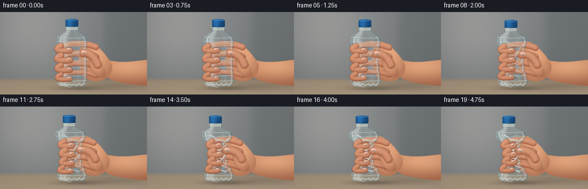
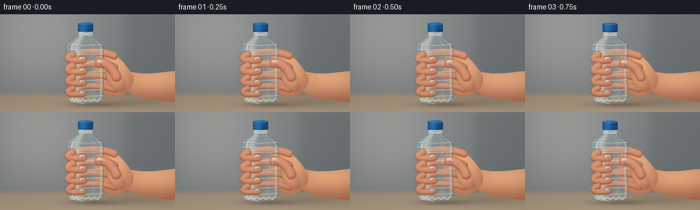

CODING AGENTS AS PIXEL WORLD MODELS
traex/GPT-6.1-Sol · mechanics_0017
点击播放 · 原生 RGB 像素
逐轮保存的候选
回放视频、检查图与代码变化。
每份候选均可单独播放。实际图片检查记录在下方工具轨迹中。
候选 01播放与检查图
点击播放 · 原生 RGB 像素


展开代码变化
--- 上一保存版本
+++ 本次保存版本
@@ -0,0 +1,321 @@
+from pathlib import Path
+import json
+import numpy as np
+from PIL import Image, ImageDraw, ImageFilter
+from scipy.ndimage import gaussian_filter
+from artifact_io import save
+
+ROOT=Path(__file__).resolve().parent
+SPEC=json.loads((ROOT/'task_spec.json').read_text())
+W,H=SPEC['width'],SPEC['height']
+S=3
+WW,HH=W*S,H*S
+Y,X=np.mgrid[0:HH,0:WW].astype(np.float32)
+X/=S; Y/=S
+rng=np.random.default_rng(195)
+# Texture is fixed to avoid any temporal sparkle.
+grain=gaussian_filter(rng.normal(0,1,(HH,WW)).astype(np.float32),.6)
+
+def bezier(points, n=70):
+ p=np.array(points,dtype=np.float32)
+ t=np.linspace(0,1,n)[:,None]
+ if len(p)==4:
+ return (1-t)**3*p[0]+3*(1-t)**2*t*p[1]+3*(1-t)*t*t*p[2]+t**3*p[3]
+ return (1-t)**2*p[0]+2*(1-t)*t*p[1]+t*t*p[2]
+
+def mask_polygon(points, blur=0):
+ im=Image.new('L',(WW,HH)); d=ImageDraw.Draw(im)
+ d.polygon([(int(x*S),int(y*S)) for x,y in points],fill=255)
+ if blur: im=im.filter(ImageFilter.GaussianBlur(blur*S))
+ return np.asarray(im,dtype=np.float32)/255
+
+def stroke(im, pts, color, width=1):
+ im=Image.fromarray(np.uint8(np.clip(im,0,255)))
+ d=ImageDraw.Draw(im)
+ d.line([(round(x*S),round(y*S)) for x,y in pts],fill=tuple(int(v) for v in color),width=max(1,round(width*S)),joint='curve')
+ return np.array(im,dtype=np.float32)
+
+def overlay_line(canvas, points, color, width, alpha=1, blur=0, clip=None):
+ im=Image.new('L',(WW,HH)); d=ImageDraw.Draw(im)
+ d.line([(round(x*S),round(y*S)) for x,y in points],fill=round(alpha*255),width=max(1,round(width*S)),joint='curve')
+ if blur: im=im.filter(ImageFilter.GaussianBlur(blur*S))
+ a=np.array(im,dtype=np.float32)/255
+ if clip is not None: a*=clip
+ canvas[:]=canvas*(1-a[...,None])+np.array(color)[None,None,:]*a[...,None]
+
+def skin_shape(canvas, points, center, size, shade=0, shadow=True):
+ m=mask_polygon(points, .24)
+ if shadow:
+ sh=gaussian_filter(m,2.2*S)*.24
+ canvas[:]=canvas*(1-sh[...,None])
+ cx,cy=center; rx,ry=size
+ light=np.exp(-((X-cx)/rx)**2-((Y-cy)/ry)**2)
+ side=np.clip((Y-cy)/max(ry,1),-1,1)
+ c=np.empty_like(canvas)
+ c[:,:,0]=164+64*light-8*side+shade+grain*1.4
+ c[:,:,1]=102+64*light-9*side+shade+grain*1.15
+ c[:,:,2]=72+53*light-6*side+shade+grain
+ canvas[:]=canvas*(1-m[...,None])+c*m[...,None]
+ return m
+
+def tube(canvas, points, radius, shade=0, nail=False, front=False):
+ path=bezier(points, 52)
+ # Distance to a swept smooth tube; shade its round surface analytically.
+ dist=np.full((HH,WW),1e6,np.float32)
+ rel_y=np.zeros((HH,WW),np.float32)
+ rel_x=np.zeros((HH,WW),np.float32)
+ along=np.zeros((HH,WW),np.float32)
+ for i,(px,py) in enumerate(path):
+ dx=X-px; dy=Y-py
+ ds=dx*dx+dy*dy
+ hit=ds<dist
+ dist=np.minimum(dist,ds)
+ rel_y[hit]=dy[hit]; rel_x[hit]=dx[hit]; along[hit]=i/(len(path)-1)
+ r=radius*(1-.09*along)
+ dd=np.sqrt(dist)
+ m=np.clip((r-dd)*S+.5,0,1)
+ if front:
+ sh=gaussian_filter(m,1.0*S)*.24
+ canvas[:]=canvas*(1-sh[...,None])
+ z=np.sqrt(np.maximum(0,1-(dd/r)**2))
+ light=np.clip(.72*z-.34*rel_y/r-.12*rel_x/r,0,1)
+ redness=np.exp(-((along-.20)/.14)**2)*4
+ c=np.stack([155+76*light+redness+shade+grain*1.3,
+ 88+81*light+shade+grain*1.1,
+ 62+72*light+shade+grain],axis=-1)
+ # Warm reflected light on the lower edge.
+ rim=np.maximum(rel_y/r,0)*(1-z)
+ c+=rim[...,None]*np.array([18,11,7])
+ canvas[:]=canvas*(1-m[...,None])+c*m[...,None]
+ return m,path
+
+def nail(canvas, cx,cy,rx,ry,angle=0):
+ a=angle; dx=X-cx;dy=Y-cy
+ u=dx*np.cos(a)+dy*np.sin(a);v=-dx*np.sin(a)+dy*np.cos(a)
+ # Slightly squared oval nails, small and unpolished.
+ q=(np.abs(u/rx)**2.6+(v/ry)**2)
+ edge=np.clip((1-q)*S*1.8,0,1)
+ rim=np.clip((1.19-q)*S*1.8,0,1)*.56
+ canvas[:]=canvas*(1-rim[...,None])+np.array([151,90,74])*rim[...,None]
+ lit=np.clip(1-.17*u/rx-.26*v/ry,0.6,1.2)
+ c=np.stack([214*lit,166*lit,145*lit],axis=-1)
+ free=np.clip((u/rx-.5)*2,0,1)*.65
+ c=c*(1-free[...,None])+np.array([231,208,181])*free[...,None]
+ shine=np.exp(-((u+rx*.12)/(rx*.8))**2-((v+ry*.45)/(ry*.19))**2)*.22
+ c=c*(1-shine[...,None])+np.array([255,232,211])*shine[...,None]
+ canvas[:]=canvas*(1-edge[...,None])+c*edge[...,None]
+
+def crease(canvas,cx,cy,length,angle=0, strength=.38):
+ ca=np.cos(angle);sa=np.sin(angle)
+ for j in [0,1.25]:
+ p=bezier([(cx-ca*length/2-sa*j,cy-sa*length/2+ca*j),
+ (cx-sa*(j+.8),cy+ca*(j+.8)),
+ (cx+ca*length/2-sa*j,cy+sa*length/2+ca*j)],25)
+ overlay_line(canvas,p,(126,77,56),.32,strength,.10)
+ overlay_line(canvas,p+np.array([0,-.45]),(239,183,145),.24,strength*.45,.10)
+
+# Quiet, defocused room, a wood tabletop and soft daylight from the left.
+base=np.zeros((HH,WW,3),np.float32)
+wall=np.clip(Y/144,0,1)
+window=np.exp(-((X-51)/93)**2-((Y-29)/108)**2)
+for k,(b,v) in enumerate([(122,34),(126,31),(128,27)]):
+ base[:,:,k]=b+v*window-13*wall
+# Defocused panel in the distant background.
+panel=np.exp(-((X-223)/43)**8-((Y-48)/64)**8)*.25
+base=base*(1-panel[...,None])+np.array([81,88,88])*panel[...,None]
+# Seam is extremely soft, to place the scene on a tabletop without distraction.
+table=np.clip((Y-114)/7,0,1)
+wood=np.stack([157+10*(Y-120)/24,140+9*(Y-120)/24,118+8*(Y-120)/24],-1)
+base=base*(1-table[...,None])+wood*table[...,None]
+base+=grain[...,None]*.52
+
+def bottle_geom(progress):
+ p=progress
+ yy=np.arange(HH)/S
+ # Neck, shoulder, ridged body and rounded PET foot.
+ ys=np.array([17,23,29,34,38,44,49,111,119,125,129,132],np.float32)
+ ys[:7]+=p*np.array([4,4,4,4,3,1,0])
+ rr=np.array([9.5,9.8,10,11,17,25,26.5,26.5,26,25,20,0],np.float32)
+ radius=np.interp(yy,ys,rr,left=0,right=0)
+ envelope=np.exp(-((yy-83)/24)**4)
+ radius-=p*(14.4*envelope+2.5*np.exp(-((yy-109)/9)**2))
+ crumple=(np.sin(yy*.47+1.4)+.5*np.sin(yy*.98-.8))*p*1.25*np.exp(-((yy-86)/33)**4)
+ radius+=crumple
+ center=125-p*(7*np.exp(-((yy-30)/25)**2)+2*np.exp(-((yy-80)/23)**2))
+ left=center-radius-p*(np.sin(yy*.61)*1.4)*envelope
+ right=center+radius+p*(np.sin(yy*.54+1)*1.15)*envelope
+ return yy,center,radius,left,right,ys
+
+def bottle(canvas,p):
+ yy,c,r,l,rt,ys=bottle_geom(p)
+ cc=c[:,None]; rad=r[:,None]
+ u=(X-cc)/np.maximum(rad,1)
+ zz=np.sqrt(np.maximum(0,1-u*u))
+ m=np.clip(np.minimum(X-l[:,None],rt[:,None]-X)*S+.5,0,1)
+ m*=((Y>=ys[0])&(Y<=132))
+ theta=np.arcsin(np.clip(u,-.999,.999))
+ env=np.exp(-((Y-84)/31)**4)
+ folds=(np.sin(Y*.55+theta*6)+.5*np.sin(Y*.92-theta*9))*p*env
+ refract_shift=np.rint((u*2.0+folds*.65)*S).astype(int)
+ sx=np.clip(np.arange(WW)[None,:]+refract_shift,0,WW-1)
+ backing=canvas[np.arange(HH)[:,None],sx,:]
+ tint=np.array([163,194,204])
+ # Mostly transparent center, thicker bluish edges and broad softbox reflections.
+ a=.10+.21*(np.abs(u)**4)+.035*np.abs(folds)
+ a=np.clip(a,0,.7)
+ surface=backing*(1-a[...,None])+tint*a[...,None]
+ fres=np.clip(np.abs(u),0,1)**10
+ surface-=fres[...,None]*np.array([35,29,22])
+ broad=np.exp(-((u+.52+p*.07*folds)/.22)**2)*(.27+.14*zz)
+ slim=np.exp(-((u+.76+p*.055*folds)/.040)**2)*.58
+ rim=np.exp(-((u-.86-p*.018*folds)/.04)**2)*.37
+ warm=np.exp(-((u-.42)/.12)**2)*.07
+ reflect=np.clip(broad+slim+rim+warm,0,.84)
+ surface=surface*(1-reflect[...,None])+np.array([238,245,240])*reflect[...,None]
+ # Deformation makes angular changes to normals and hard little facets.
+ fshade=np.sin(Y*.58+theta*7+np.sin(Y*.17))*p*env
+ surface+=fshade[...,None]*np.array([9,11,12])
+ surface+=grain[...,None]*.65
+ canvas[:]=canvas*(1-m[...,None])+surface*m[...,None]
+ # Shoulder and base outlines, not a thick cartoon contour.
+ overlay_line(canvas,list(zip(l,yy)),(57,83,89),.48,.49,.1,m)
+ overlay_line(canvas,list(zip(rt,yy)),(61,87,90),.52,.52,.12,m)
+ overlay_line(canvas,list(zip(l+.7,yy)),(227,237,232),.52,.57,.08,m)
+ # Molded horizontal PET ribs. Front arcs sag and kink when squeezed.
+ for j,y0 in enumerate([44,51,58,70,83,96,110,119,125]):
+ rad0=np.interp(y0,yy,r)
+ cen0=np.interp(y0,yy,c)
+ xx=np.linspace(-.985,.985,100)
+ bend=2.0*np.sqrt(1-xx*xx)
+ sag=p*np.exp(-((y0-84)/30)**4)*(2.2*np.sin(xx*7+j*1.9)+1.1*np.sin(xx*13+j))
+ yline=y0+bend+sag
+ xline=np.array([np.interp(v,yy,c)+q*np.interp(v,yy,r) for q,v in zip(xx,yline)])
+ pts=np.c_[xline,yline]
+ overlay_line(canvas,pts,(67,98,106),.65,.40,.10,m)
+ overlay_line(canvas,pts+np.array([0,-.75]),(230,241,237),.75,.72,.09,m)
+ overlay_line(canvas,pts+np.array([0,.72]),(183,207,211),.4,.4,0,m)
+ # Irregular, angled stress creases; their contrast increases as plastic collapses.
+ folds=[[(105,60),(114,67),(120,76),(132,78)],
+ [(148,56),(136,66),(140,73),(125,88)],
+ [(102,82),(115,88),(122,91),(137,92)],
+ [(149,87),(134,96),(124,98),(111,107)],
+ [(110,115),(119,106),(130,110),(140,114)],
+ [(114,51),(121,57),(128,59),(139,59)],
+ [(145,107),(139,105),(128,100),(124,94)]]
+ for k,ps in enumerate(folds):
+ pts=bezier(ps,60)
+ # Advection toward the crushed surface.
+ for i,(xx,yv) in enumerate(pts):
+ rr=np.interp(yv,yy,r); cx=np.interp(yv,yy,c)
+ pts[i,0]=cx+(xx-125)*rr/26.5
+ pts[i,1]+=p*np.sin(i*.07+k)*1.1
+ overlay_line(canvas,pts,(68,91,99),.6,.48*p,.16,m)
+ overlay_line(canvas,pts+np.array([-.4,-.65]),(250,251,240),.85,.85*p,.14,m)
+ overlay_line(canvas,pts+np.array([.55,.65]),(186,210,212),.4,.35*p,.1,m)
+ # Five thick petaloid feet visible through the base.
+ for k in [-2,-1,0,1,2]:
+ px=125+k*8.8
+ pts=bezier([(px-3,124),(px-4,129),(px+2,131),(px+4,126)],40)
+ overlay_line(canvas,pts,(76,107,114),.7,.55,.15,m)
+ overlay_line(canvas,pts+np.array([-.8,-.7]),(238,246,242),.9,.64,.12,m)
+ return m
+
+def cap(canvas,p):
+ cx=125-7*p; top=14+4*p
+ # Molded screw threads and pale neck below the cap.
+ for dy in [12.5,14.4,16.0]:
+ pts=bezier([(cx-10,top+dy),(cx,top+dy+1.5),(cx+10,top+dy)],30)
+ overlay_line(canvas,pts,(219,230,218),1.3,.8,.1)
+ overlay_line(canvas,pts+np.array([0,.55]),(86,119,120),.4,.7,.05)
+ im=Image.new('L',(WW,HH));d=ImageDraw.Draw(im)
+ d.rounded_rectangle([((cx-11)*S,top*S),((cx+11)*S,(top+11.5)*S)],radius=1.7*S,fill=255)
+ d.ellipse([((cx-11)*S,(top-2)*S),((cx+11)*S,(top+2.8)*S)],fill=255)
+ m=np.asarray(im,dtype=np.float32)/255
+ v=(X-cx)/11
+ lit=np.exp(-((v+.36)/.57)**2)
+ grooves=(.5+.5*np.sin((X-cx)*8))*3.5
+ c=np.stack([18+18*lit+grooves,66+42*lit+grooves,117+59*lit+grooves],-1)
+ c-=np.clip((Y-top)/12,0,1)[...,None]*np.array([4,8,14])
+ canvas[:]=canvas*(1-m[...,None])+c*m[...,None]
+ # Horizontal cap top ellipse: matte blue ridged plastic, lit at the left.
+ el=((X-cx)/10.5)**2+((Y-top+.1)/2.05)**2
+ em=np.clip((1-el)*S,0,1)
+ ec=np.stack([36+13*lit,99+22*lit,158+21*lit],-1)
+ canvas[:]=canvas*(1-em[...,None])+ec*em[...,None]
+ for x in np.arange(cx-9.5,cx+10,1.65):
+ overlay_line(canvas,[(x,top+2.3),(x,top+10)],(73,139,188),.32,.48,.02,m)
+ overlay_line(canvas,bezier([(cx-10,top+11),(cx,top+13),(cx+10,top+11)],35),(15,64,112),1,.85,.03,m)
+ overlay_line(canvas,bezier([(cx-10,top+1),(cx,top-2.1),(cx+10,top+1)],35),(113,167,204),.44,.65,.04,m)
+
+frames=[]
+for frame in range(SPEC['frames']):
+ t=frame/(SPEC['frames']-1)
+ # Accelerating squeeze with little plateaus, like an evenly sampled timelapse.
+ p=(t*t*(3-2*t))**.82
+ canvas=base.copy()
+ # Contact and cast shadows on the tabletop.
+ shadow=np.exp(-((X-136)/37)**2-((Y-133)/3.7)**2)*(.23+.025*p)
+ handshadow=np.exp(-((X-197)/64)**2-((Y-129)/8.5)**2)*.13
+ canvas*=1-(shadow+handshadow)[...,None]
+ shift=6*p
+ # Forearm entering from the right, with a curved wrist and compressed thenar palm.
+ arm=bezier([(264,83),(238,84),(213,92),(187-shift,83)],35).tolist()
+ arm+=bezier([(187-shift,83),(173-shift,91),(175-shift,111),(196-shift,119)],25).tolist()
+ arm+=bezier([(196-shift,119),(215,126),(244,129),(264,129)],35).tolist()
+ skin_shape(canvas,arm,(226,95),(75,27),shadow=False)
+ palm=bezier([(195-shift,92),(185-shift,73),(163-shift,49),(148-shift,51)],25).tolist()
+ palm+=bezier([(148-shift,51),(137-shift,62),(132-shift,100),(150-shift,116)],25).tolist()
+ palm+=bezier([(150-shift,116),(169-shift,127),(190-shift,119),(195-shift,100)],25).tolist()
+ skin_shape(canvas,palm,(167-shift,80),(31,43),shade=2,shadow=False)
+ # Palm folds and wrist flexion creases, kept softly below the focus plane.
+ for j in range(3):
+ pts=bezier([(185-shift+j*2,91+j*5),(179-shift+j,101+j*4),(184-shift+j*2,114+j*2)],35)
+ overlay_line(canvas,pts,(123,79,60),.45,.21,.20)
+ overlay_line(canvas,pts+np.array([1.1,0]),(223,163,125),.4,.22,.2)
+ for j in range(2):
+ overlay_line(canvas,bezier([(156-shift,81+j*9),(161-shift,96+j*9),(175-shift,105+j*8)],40),(134,83,62),.43,.19,.24)
+ # Four fingers go behind the bottle and return around its left side.
+ configs=[(60,5.5,0),(77,5.8,-1),(94,5.2,-4),(110,4.5,-6)]
+ for j,(y0,rr,sh) in enumerate(configs):
+ yy0=y0+p*([3,1,-2,-5][j])
+ left0=103+p*[8,11,10,5][j]
+ pts=[(167-shift,yy0+1),(148-shift,yy0-7),(123,yy0-6),(left0+2,yy0)]
+ tube(canvas,pts,rr,shade=sh)
+ bottle(canvas,p)
+ cap(canvas,p)
+ # The distal finger joints, curling onto the front of the transparent bottle.
+ for j,(y0,rr,sh) in enumerate(configs):
+ yy0=y0+p*([3,1,-2,-5][j])
+ left0=103+p*[8,11,10,5][j]
+ tip=122+p*[5,6,6,3][j]
+ pts=[(left0+3,yy0-1),(left0-10+2*p,yy0+5),(left0-2,yy0+10),(tip,yy0+7-1.5*p)]
+ m,path=tube(canvas,pts,rr,shade=sh,front=True)
+ # Short nails face the camera on the curled distal phalanges.
+ nail(canvas,tip-2.2,yy0+4.9-1.5*p,4.2-j*.35,2.4-j*.15,-.07)
+ crease(canvas,left0-.7,yy0+3.9,rr*1.4,-1.18,.28)
+ crease(canvas,tip-8,yy0+6.5-1.5*p,rr*1.05,-1.32,.26)
+ # A soft lower-contact fold, darkening as the grip becomes firm.
+ overlay_line(canvas,bezier([(left0+2,yy0+10),(tip-5,yy0+11),(tip+3,yy0+8)],30),(112,64,42),.34,.24+p*.08,.1,m)
+ # Opposing thumb: a broad fleshy joint and its rounded nail press the right side.
+ thumbbase=bezier([(183-shift,109),(179-shift,97),(172-shift,77),(162-shift,72)],30).tolist()
+ thumbbase+=bezier([(162-shift,72),(156-shift,72),(151-shift,86),(159-shift,99)],25).tolist()
+ thumbbase+=bezier([(159-shift,99),(166-shift,114),(179-shift,116),(183-shift,109)],25).tolist()
+ skin_shape(canvas,thumbbase,(169-shift,91),(16,22),shade=0,shadow=True)
+ tipx=145-8*p; tipy=72+6*p
+ pts=[(170-shift,92),(166-shift,81),(155-8*p,tipy-3),(tipx,tipy)]
+ tm,tp=tube(canvas,pts,7.0,shade=1,front=True)
+ nail(canvas,tipx+1.1,tipy-1.6,5.3,3.6,.26)
+ crease(canvas,158-7*p,81+3*p,9.0,-.45,.36)
+ crease(canvas,165-shift,91,10,-.45,.21)
+ # Subtle fine skin lines and pores in the thenar region.
+ for j in range(6):
+ px=168-shift+(j%2)*2; py=97+j*2
+ overlay_line(canvas,bezier([(px,py),(px+4,py+1),(px+6,py-.1)],18),(136,90,66),.22,.12,.10,tm)
+ # Soft optical vignette and consistent fine sensor texture.
+ vignette=1-.075*((X-129)/181)**2-.045*((Y-74)/118)**2
+ canvas*=vignette[...,None]
+ out=Image.fromarray(np.uint8(np.clip(canvas,0,255))).resize((W,H),Image.Resampling.LANCZOS)
+ frames.append(np.array(out))
+ print(f'frame {frame+1}/{SPEC["frames"]}',flush=True)
+save(np.stack(frames),ROOT)
+print('Saved RGB video artifacts.',flush=True)
可观测工具轨迹
实际执行的命令与返回图片。
命令 1exit 0
/bin/bash -lc "ls -la && cat prompt.txt && printf '\\n--- RULES ---\\n' && cat GENERATION_RULES.md && printf '\\n--- SPEC ---\\n' && cat task_spec.json"
命令 2exit 0
/bin/bash -lc "cat artifact_io.py && python - <<'PY' import importlib.util for m in ['numpy','PIL','scipy']: print(m, bool(importlib.util.find_spec(m))) PY"
命令 3exit 0
/bin/bash -lc "cat > generate.py <<'PY'
from pathlib import Path
import json
import numpy as np
from PIL import Image, ImageDraw, ImageFilter
from scipy.ndimage import gaussian_filter
from artifact_io import save
ROOT=Path(__file__).resolve().parent
SPEC=json.loads((ROOT/'task_spec.json').read_text())
W,H=SPEC['width'],SPEC['height']
S=3
WW,HH=W*S,H*S
Y,X=np.mgrid[0:HH,0:WW].astype(np.float32)
X/=S; Y/=S
rng=np.random.default_rng(195)
# Texture is fixed to avoid any temporal sparkle.
grain=gaussian_filter(rng.normal(0,1,(HH,WW)).astype(np.float32),.6)
def bezier(points, n=70):
p=np.array(points,dtype=np.float32)
t=np.linspace(0,1,n)[:,None]
if len(p)==4:
return (1-t)**3*p[0]+3*(1-t)**2*t*p[1]+3*(1-t)*t*t*p[2]+t**3*p[3]
return (1-t)**2*p[0]+2*(1-t)*t*p[1]+t*t*p[2]
def mask_polygon(points, blur=0):
im=Image.new('L',(WW,HH)); d=ImageDraw.Draw(im)
d.polygon([(int(x*S),int(y*S)) for x,y in points],fill=255)
if blur: im=im.filter(ImageFilter.GaussianBlur(blur*S))
return np.asarray(im,dtype=np.float32)/255
def stroke(im, pts, color, width=1):
im=Image.fromarray(np.uint8(np.clip(im,0,255)))
d=ImageDraw.Draw(im)
d.line([(round(x*S),round(y*S)) for x,y in pts],fill=tuple(int(v) for v in color),width=max(1,round(width*S)),joint='curve')
return np.array(im,dtype=np.float32)
def overlay_line(canvas, points, color, width, alpha=1, blur=0, clip=None):
im=Image.new('L',(WW,HH)); d=ImageDraw.Draw(im)
d.line([(round(x*S),round(y*S)) for x,y in points],fill=round(alpha*255),width=max(1,round(width*S)),joint='curve')
if blur: im=im.filter(ImageFilter.GaussianBlur(blur*S))
a=np.array(im,dtype=np.float32)/255
if clip is not None: a*=clip
canvas[:]=canvas*(1-a[...,None])+np.array(color)[None,None,:]*a[...,None]
def skin_shape(canvas, points, center, size, shade=0, shadow=True):
m=mask_polygon(points, .24)
if shadow:
sh=gaussian_filter(m,2.2*S)*.24
canvas[:]=canvas*(1-sh[...,None])
cx,cy=center; rx,ry=size
light=np.exp(-((X-cx)/rx)**2-((Y-cy)/ry)**2)
side=np.clip((Y-cy)/max(ry,1),-1,1)
c=np.empty_like(canvas)
c[:,:,0]=164+64*light-8*side+shade+grain*1.4
c[:,:,1]=102+64*light-9*side+shade+grain*1.15
c[:,:,2]=72+53*light-6*side+shade+grain
canvas[:]=canvas*(1-m[...,None])+c*m[...,None]
return m
def tube(canvas, points, radius, shade=0, nail=False, front=False):
path=bezier(points, 52)
# Distance to a swept smooth tube; shade its round surface analytically.
dist=np.full((HH,WW),1e6,np.float32)
rel_y=np.zeros((HH,WW),np.float32)
rel_x=np.zeros((HH,WW),np.float32)
along=np.zeros((HH,WW),np.float32)
for i,(px,py) in enumerate(path):
dx=X-px; dy=Y-py
ds=dx*dx+dy*dy
hit=ds<dist
dist=np.minimum(dist,ds)
rel_y[hit]=dy[hit]; rel_x[hit]=dx[hit]; along[hit]=i/(len(path)-1)
r=radius*(1-.09*along)
dd=np.sqrt(dist)
m=np.clip((r-dd)*S+.5,0,1)
if front:
sh=gaussian_filter(m,1.0*S)*.24
canvas[:]=canvas*(1-sh[...,None])
z=np.sqrt(np.maximum(0,1-(dd/r)**2))
light=np.clip(.72*z-.34*rel_y/r-.12*rel_x/r,0,1)
redness=np.exp(-((along-.20)/.14)**2)*4
c=np.stack([155+76*light+redness+shade+grain*1.3,
88+81*light+shade+grain*1.1,
62+72*light+shade+grain],axis=-1)
# Warm reflected light on the lower edge.
rim=np.maximum(rel_y/r,0)*(1-z)
c+=rim[...,None]*np.array([18,11,7])
canvas[:]=canvas*(1-m[...,None])+c*m[...,None]
return m,path
def nail(canvas, cx,cy,rx,ry,angle=0):
a=angle; dx=X-cx;dy=Y-cy
u=dx*np.cos(a)+dy*np.sin(a);v=-dx*np.sin(a)+dy*np.cos(a)
# Slightly squared oval nails, small and unpolished.
q=(np.abs(u/rx)**2.6+(v/ry)**2)
edge=np.clip((1-q)*S*1.8,0,1)
rim=np.clip((1.19-q)*S*1.8,0,1)*.56
canvas[:]=canvas*(1-rim[...,None])+np.array([151,90,74])*rim[...,None]
lit=np.clip(1-.17*u/rx-.26*v/ry,0.6,1.2)
c=np.stack([214*lit,166*lit,145*lit],axis=-1)
free=np.clip((u/rx-.5)*2,0,1)*.65
c=c*(1-free[...,None])+np.array([231,208,181])*free[...,None]
shine=np.exp(-((u+rx*.12)/(rx*.8))**2-((v+ry*.45)/(ry*.19))**2)*.22
c=c*(1-shine[...,None])+np.array([255,232,211])*shine[...,None]
canvas[:]=canvas*(1-edge[...,None])+c*edge[...,None]
def crease(canvas,cx,cy,length,angle=0, strength=.38):
ca=np.cos(angle);sa=np.sin(angle)
for j in [0,1.25]:
p=bezier([(cx-ca*length/2-sa*j,cy-sa*length/2+ca*j),
(cx-sa*(j+.8),cy+ca*(j+.8)),
(cx+ca*length/2-sa*j,cy+sa*length/2+ca*j)],25)
overlay_line(canvas,p,(126,77,56),.32,strength,.10)
overlay_line(canvas,p+np.array([0,-.45]),(239,183,145),.24,strength*.45,.10)
# Quiet, defocused room, a wood tabletop and soft daylight from the left.
base=np.zeros((HH,WW,3),np.float32)
wall=np.clip(Y/144,0,1)
window=np.exp(-((X-51)/93)**2-((Y-29)/108)**2)
for k,(b,v) in enumerate([(122,34),(126,31),(128,27)]):
base[:,:,k]=b+v*window-13*wall
# Defocused panel in the distant background.
panel=np.exp(-((X-223)/43)**8-((Y-48)/64)**8)*.25
base=base*(1-panel[...,None])+np.array([81,88,88])*panel[...,None]
# Seam is extremely soft, to place the scene on a tabletop without distraction.
table=np.clip((Y-114)/7,0,1)
wood=np.stack([157+10*(Y-120)/24,140+9*(Y-120)/24,118+8*(Y-120)/24],-1)
base=base*(1-table[...,None])+wood*table[...,None]
base+=grain[...,None]*.52
def bottle_geom(progress):
p=progress
yy=np.arange(HH)/S
# Neck, shoulder, ridged body and rounded PET foot.
ys=np.array([17,23,29,34,38,44,49,111,119,125,129,132],np.float32)
ys[:7]+=p*np.array([4,4,4,4,3,1,0])
rr=np.array([9.5,9.8,10,11,17,25,26.5,26.5,26,25,20,0],np.float32)
radius=np.interp(yy,ys,rr,left=0,right=0)
envelope=np.exp(-((yy-83)/24)**4)
radius-=p*(14.4*envelope+2.5*np.exp(-((yy-109)/9)**2))
crumple=(np.sin(yy*.47+1.4)+.5*np.sin(yy*.98-.8))*p*1.25*np.exp(-((yy-86)/33)**4)
radius+=crumple
center=125-p*(7*np.exp(-((yy-30)/25)**2)+2*np.exp(-((yy-80)/23)**2))
left=center-radius-p*(np.sin(yy*.61)*1.4)*envelope
right=center+radius+p*(np.sin(yy*.54+1)*1.15)*envelope
return yy,center,radius,left,right,ys
def bottle(canvas,p):
yy,c,r,l,rt,ys=bottle_geom(p)
cc=c[:,None]; rad=r[:,None]
u=(X-cc)/np.maximum(rad,1)
zz=np.sqrt(np.maximum(0,1-u*u))
m=np.clip(np.minimum(X-l[:,None],rt[:,None]-X)*S+.5,0,1)
m*=((Y>=ys[0])&(Y<=132))
theta=np.arcsin(np.clip(u,-.999,.999))
env=np.exp(-((Y-84)/31)**4)
folds=(np.sin(Y*.55+theta*6)+.5*np.sin(Y*.92-theta*9))*p*env
refract_shift=np.rint((u*2.0+folds*.65)*S).astype(int)
sx=np.clip(np.arange(WW)[None,:]+refract_shift,0,WW-1)
backing=canvas[np.arange(HH)[:,None],sx,:]
tint=np.array([163,194,204])
# Mostly transparent center, thicker bluish edges and broad softbox reflections.
a=.10+.21*(np.abs(u)**4)+.035*np.abs(folds)
a=np.clip(a,0,.7)
surface=backing*(1-a[...,None])+tint*a[...,None]
fres=np.clip(np.abs(u),0,1)**10
surface-=fres[...,None]*np.array([35,29,22])
broad=np.exp(-((u+.52+p*.07*folds)/.22)**2)*(.27+.14*zz)
slim=np.exp(-((u+.76+p*.055*folds)/.040)**2)*.58
rim=np.exp(-((u-.86-p*.018*folds)/.04)**2)*.37
warm=np.exp(-((u-.42)/.12)**2)*.07
reflect=np.clip(broad+slim+rim+warm,0,.84)
surface=surface*(1-reflect[...,None])+np.array([238,245,240])*reflect[...,None]
# Deformation makes angular changes to normals and hard little facets.
fshade=np.sin(Y*.58+theta*7+np.sin(Y*.17))*p*env
surface+=fshade[...,None]*np.array([9,11,12])
surface+=grain[...,None]*.65
canvas[:]=canvas*(1-m[...,None])+surface*m[...,None]
# Shoulder and base outlines, not a thick cartoon contour.
overlay_line(canvas,list(zip(l,yy)),(57,83,89),.48,.49,.1,m)
overlay_line(canvas,list(zip(rt,yy)),(61,87,90),.52,.52,.12,m)
overlay_line(canvas,list(zip(l+.7,yy)),(227,237,232),.52,.57,.08,m)
# Molded horizontal PET ribs. Front arcs sag and kink when squeezed.
for j,y0 in enumerate([44,51,58,70,83,96,110,119,125]):
rad0=np.interp(y0,yy,r)
cen0=np.interp(y0,yy,c)
xx=np.linspace(-.985,.985,100)
bend=2.0*np.sqrt(1-xx*xx)
sag=p*np.exp(-((y0-84)/30)**4)*(2.2*np.sin(xx*7+j*1.9)+1.1*np.sin(xx*13+j))
yline=y0+bend+sag
xline=np.array([np.interp(v,yy,c)+q*np.interp(v,yy,r) for q,v in zip(xx,yline)])
pts=np.c_[xline,yline]
overlay_line(canvas,pts,(67,98,106),.65,.40,.10,m)
overlay_line(canvas,pts+np.array([0,-.75]),(230,241,237),.75,.72,.09,m)
overlay_line(canvas,pts+np.array([0,.72]),(183,207,211),.4,.4,0,m)
# Irregular, angled stress creases; their contrast increases as plastic collapses.
folds=[[(105,60),(114,67),(120,76),(132,78)],
[(148,56),(136,66),(140,73),(125,88)],
[(102,82),(115,88),(122,91),(137,92)],
[(149,87),(134,96),(124,98),(111,107)],
[(110,115),(119,106),(130,110),(140,114)],
[(114,51),(121,57),(128,59),(139,59)],
[(145,107),(139,105),(128,100),(124,94)]]
for k,ps in enumerate(folds):
pts=bezier(ps,60)
# Advection toward the crushed surface.
for i,(xx,yv) in enumerate(pts):
rr=np.interp(yv,yy,r); cx=np.interp(yv,yy,c)
pts[i,0]=cx+(xx-125)*rr/26.5
pts[i,1]+=p*np.sin(i*.07+k)*1.1
overlay_line(canvas,pts,(68,91,99),.6,.48*p,.16,m)
overlay_line(canvas,pts+np.array([-.4,-.65]),(250,251,240),.85,.85*p,.14,m)
overlay_line(canvas,pts+np.array([.55,.65]),(186,210,212),.4,.35*p,.1,m)
# Five thick petaloid feet visible through the base.
for k in [-2,-1,0,1,2]:
px=125+k*8.8
pts=bezier([(px-3,124),(px-4,129),(px+2,131),(px+4,126)],40)
overlay_line(canvas,pts,(76,107,114),.7,.55,.15,m)
overlay_line(canvas,pts+np.array([-.8,-.7]),(238,246,242),.9,.64,.12,m)
return m
def cap(canvas,p):
cx=125-7*p; top=14+4*p
# Molded screw threads and pale neck below the cap.
for dy in [12.5,14.4,16.0]:
pts=bezier([(cx-10,top+dy),(cx,top+dy+1.5),(cx+10,top+dy)],30)
overlay_line(canvas,pts,(219,230,218),1.3,.8,.1)
overlay_line(canvas,pts+np.array([0,.55]),(86,119,120),.4,.7,.05)
im=Image.new('L',(WW,HH));d=ImageDraw.Draw(im)
d.rounded_rectangle([((cx-11)*S,top*S),((cx+11)*S,(top+11.5)*S)],radius=1.7*S,fill=255)
d.ellipse([((cx-11)*S,(top-2)*S),((cx+11)*S,(top+2.8)*S)],fill=255)
m=np.asarray(im,dtype=np.float32)/255
v=(X-cx)/11
lit=np.exp(-((v+.36)/.57)**2)
grooves=(.5+.5*np.sin((X-cx)*8))*3.5
c=np.stack([18+18*lit+grooves,66+42*lit+grooves,117+59*lit+grooves],-1)
c-=np.clip((Y-top)/12,0,1)[...,None]*np.array([4,8,14])
canvas[:]=canvas*(1-m[...,None])+c*m[...,None]
# Horizontal cap top ellipse: matte blue ridged plastic, lit at the left.
el=((X-cx)/10.5)**2+((Y-top+.1)/2.05)**2
em=np.clip((1-el)*S,0,1)
ec=np.stack([36+13*lit,99+22*lit,158+21*lit],-1)
canvas[:]=canvas*(1-em[...,None])+ec*em[...,None]
for x in np.arange(cx-9.5,cx+10,1.65):
overlay_line(canvas,[(x,top+2.3),(x,top+10)],(73,139,188),.32,.48,.02,m)
overlay_line(canvas,bezier([(cx-10,top+11),(cx,top+13),(cx+10,top+11)],35),(15,64,112),1,.85,.03,m)
overlay_line(canvas,bezier([(cx-10,top+1),(cx,top-2.1),(cx+10,top+1)],35),(113,167,204),.44,.65,.04,m)
frames=[]
for frame in range(SPEC['frames']):
t=frame/(SPEC['frames']-1)
# Accelerating squeeze with little plateaus, like an evenly sampled timelapse.
p=(t*t*(3-2*t))**.82
canvas=base.copy()
# Contact and cast shadows on the tabletop.
shadow=np.exp(-((X-136)/37)**2-((Y-133)/3.7)**2)*(.23+.025*p)
handshadow=np.exp(-((X-197)/64)**2-((Y-129)/8.5)**2)*.13
canvas*=1-(shadow+handshadow)[...,None]
shift=6*p
# Forearm entering from the right, with a curved wrist and compressed thenar palm.
arm=bezier([(264,83),(238,84),(213,92),(187-shift,83)],35).tolist()
arm+=bezier([(187-shift,83),(173-shift,91),(175-shift,111),(196-shift,119)],25).tolist()
arm+=bezier([(196-shift,119),(215,126),(244,129),(264,129)],35).tolist()
skin_shape(canvas,arm,(226,95),(75,27),shadow=False)
palm=bezier([(195-shift,92),(185-shift,73),(163-shift,49),(148-shift,51)],25).tolist()
palm+=bezier([(148-shift,51),(137-shift,62),(132-shift,100),(150-shift,116)],25).tolist()
palm+=bezier([(150-shift,116),(169-shift,127),(190-shift,119),(195-shift,100)],25).tolist()
skin_shape(canvas,palm,(167-shift,80),(31,43),shade=2,shadow=False)
# Palm folds and wrist flexion creases, kept softly below the focus plane.
for j in range(3):
pts=bezier([(185-shift+j*2,91+j*5),(179-shift+j,101+j*4),(184-shift+j*2,114+j*2)],35)
overlay_line(canvas,pts,(123,79,60),.45,.21,.20)
overlay_line(canvas,pts+np.array([1.1,0]),(223,163,125),.4,.22,.2)
for j in range(2):
overlay_line(canvas,bezier([(156-shift,81+j*9),(161-shift,96+j*9),(175-shift,105+j*8)],40),(134,83,62),.43,.19,.24)
# Four fingers go behind the bottle and return around its left side.
configs=[(60,5.5,0),(77,5.8,-1),(94,5.2,-4),(110,4.5,-6)]
for j,(y0,rr,sh) in enumerate(configs):
yy0=y0+p*([3,1,-2,-5][j])
left0=103+p*[8,11,10,5][j]
pts=[(167-shift,yy0+1),(148-shift,yy0-7),(123,yy0-6),(left0+2,yy0)]
tube(canvas,pts,rr,shade=sh)
bottle(canvas,p)
cap(canvas,p)
# The distal finger joints, curling onto the front of the transparent bottle.
for j,(y0,rr,sh) in enumerate(configs):
yy0=y0+p*([3,1,-2,-5][j])
left0=103+p*[8,11,10,5][j]
tip=122+p*[5,6,6,3][j]
pts=[(left0+3,yy0-1),(left0-10+2*p,yy0+5),(left0-2,yy0+10),(tip,yy0+7-1.5*p)]
m,path=tube(canvas,pts,rr,shade=sh,front=True)
# Short nails face the camera on the curled distal phalanges.
nail(canvas,tip-2.2,yy0+4.9-1.5*p,4.2-j*.35,2.4-j*.15,-.07)
crease(canvas,left0-.7,yy0+3.9,rr*1.4,-1.18,.28)
crease(canvas,tip-8,yy0+6.5-1.5*p,rr*1.05,-1.32,.26)
# A soft lower-contact fold, darkening as the grip becomes firm.
overlay_line(canvas,bezier([(left0+2,yy0+10),(tip-5,yy0+11),(tip+3,yy0+8)],30),(112,64,42),.34,.24+p*.08,.1,m)
# Opposing thumb: a broad fleshy joint and its rounded nail press the right side.
thumbbase=bezier([(183-shift,109),(179-shift,97),(172-shift,77),(162-shift,72)],30).tolist()
thumbbase+=bezier([(162-shift,72),(156-shift,72),(151-shift,86),(159-shift,99)],25).tolist()
thumbbase+=bezier([(159-shift,99),(166-shift,114),(179-shift,116),(183-shift,109)],25).tolist()
skin_shape(canvas,thumbbase,(169-shift,91),(16,22),shade=0,shadow=True)
tipx=145-8*p; tipy=72+6*p
pts=[(170-shift,92),(166-shift,81),(155-8*p,tipy-3),(tipx,tipy)]
tm,tp=tube(canvas,pts,7.0,shade=1,front=True)
nail(canvas,tipx+1.1,tipy-1.6,5.3,3.6,.26)
crease(canvas,158-7*p,81+3*p,9.0,-.45,.36)
crease(canvas,165-shift,91,10,-.45,.21)
# Subtle fine skin lines and pores in the thenar region.
for j in range(6):
px=168-shift+(j%2)*2; py=97+j*2
overlay_line(canvas,bezier([(px,py),(px+4,py+1),(px+6,py-.1)],18),(136,90,66),.22,.12,.10,tm)
# Soft optical vignette and consistent fine sensor texture.
vignette=1-.075*((X-129)/181)**2-.045*((Y-74)/118)**2
canvas*=vignette[...,None]
out=Image.fromarray(np.uint8(np.clip(canvas,0,255))).resize((W,H),Image.Resampling.LANCZOS)
frames.append(np.array(out))
print(f'frame {frame+1}/{SPEC[\"frames\"]}',flush=True)
save(np.stack(frames),ROOT)
print('Saved RGB video artifacts.',flush=True)
PY
python generate.py"命令 4exit 0
/bin/bash -lc "python - <<'PY'
from pathlib import Path
import numpy as np
from PIL import Image
p=Path('.')
a=np.load(p/'pixels.npz')['pixels']
assert a.shape==(144,256,20)
files=sorted((p/'frames').glob('*.png'))
assert len(files)==20
assert all(Image.open(f).mode=='RGB' and Image.open(f).size==(256,144) for f in files)
for f in ['generate.py','pixels.npz','index.html','inspection.png','transition_check.png']:
assert (p/f).is_file()
print('Validated: 20 RGB frames, 256Ã144, 4 fps / 5 seconds; all required artifacts exist.')
PY"保存候选 1 份；完成命令 4 次；可验证图片返回 0 张。原始 API 响应与完整日志保留在本地。